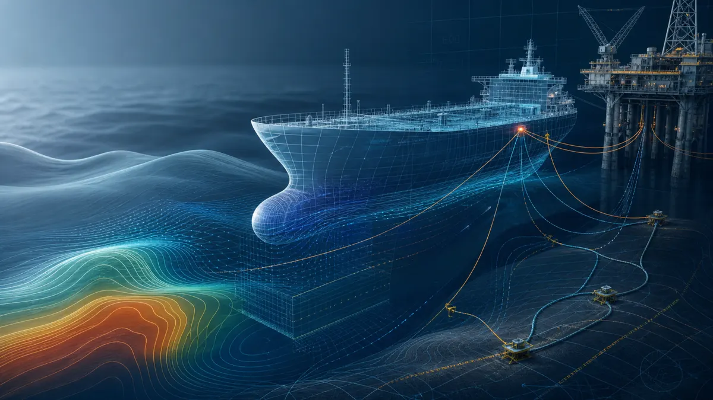

Hydrodynamics and Seakeeping
Wave loading concepts, RAOs, BEM mindset, ship stability, resistance, powering, and structured verification.
Marine Technology Engineer | Naval Architect
Vivek Chander Munigan combines ship design, hydrodynamic analysis, finite-element simulation, and maritime compliance documentation for owners, shipyards, class societies, and offshore-energy teams.

Open to relocation across Europe, Singapore, and Dubai.
Expertise
Wave loading concepts, RAOs, BEM mindset, ship stability, resistance, powering, and structured verification.
Dynamic submarine power cables, mooring behavior, offshore operations, and numerical modelling of ocean systems.
MATLAB, Python, Abaqus/CAE, NEMOH, STAR-CCM+, MAAT Hydro++, OrcaFlex, and analysis documentation.
IHM documentation, ship recycling consulting, class requirements, statutory plans, and owner-yard-class coordination.
Experience
ENSTA Bretagne & France Energies Marines
Sea Sentinels
GreenSHIP Research and Technology
Care Marine & Allied Services | ADONIA Design Engineering & Consulting LLP
Academic Projects
Intact and damaged stability analysis in MAAT Hydro++ for structural safety verification.
Designed and analysed a tanker mooring system in Deeplines, evaluating hydrodynamic response and line behavior.
Modelled and analysed waves in a towing tank basin using MATLAB.
Computed RAOs, mesh convergence, and diffraction-radiation forces with a BEM solver workflow.
Used STAR-CCM+ to assess turbulence models and mesh configurations over a periodic hill.
Simulated fluid particle trajectories and estimated water-wave drift speed in MATLAB.
Education and Toolkit
Ecole Centrale de Nantes | Nantes, France
Ship hydrodynamics, stability, structural analysis, numerical hydrodynamics, CFD, viscous flows, and mooring analysis.AMET University | Chennai, India
Ship design, resistance and propulsion, fluid mechanics, FPSO/FSO structures, offshore structures, stability, and materials.Contact